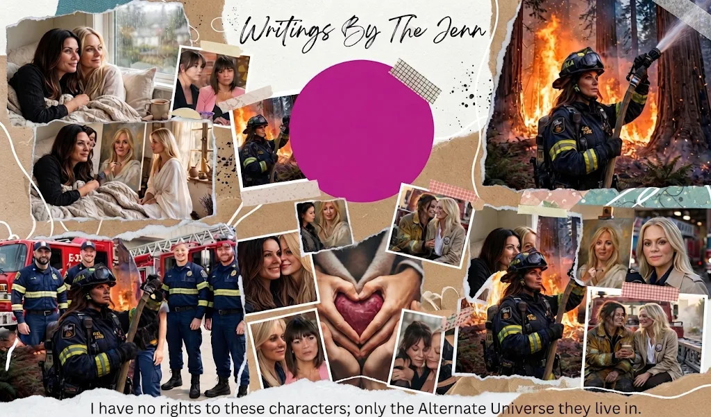

...
HTML block and paste it anywhere inside your main library page (index.html) where you want the counter to show.
Copy the block and paste it near the bottom of your index.html file right before the closing

Protected content - **Some AI Generated Pictures.
I have no rights to these characters; only the Alternate Universe they live in.